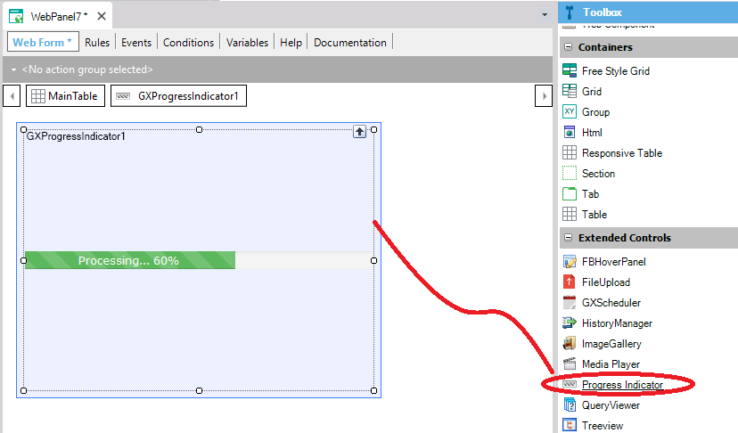
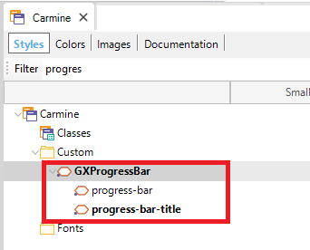

First, the Progress Indicator User Control can be dragged from the toolbox to the web form. See control Requirements.  In this example, we execute a "long running task" and we want to notify the user about its progress using a progress bar. In the web panel we program the following:
Event Test1
LongRunningTask.Submit('')
Endevent
Note that the code has to be submitted (executed asynchronously). The LongRunningTask code is as follows:
//do something that takes some time
//ProgressIndicator is defined as: Progress (GeneXus.Common.UI)
&ProgressIndicator.Type = ProgressIndicatorType.Determinate
&ProgressIndicator.ShowWithTitle("Executing action")
&ProgressIndicator.Value = 10
//do something that takes some time
&ProgressIndicator.Value = 30
//do something that takes some time
&ProgressIndicator.Value = 70
//do something that takes some time
&ProgressIndicator.Value = 100
//do something that takes some time
&ProgressIndicator.Hide()
Style of the Progress IndicatorBy default, the progress indicator for the web is assigned to the GXProgressBar class under the custom nodes of the Theme.  You can make changes to it or create a child node of GXProgressBar and set the class to the control at runtime as follows: &ProgressIndicator.Class = "progress-bar-success" Download the sample here.
|
| Backlinks | |
| Progress external object | Progress Indicator User Control |